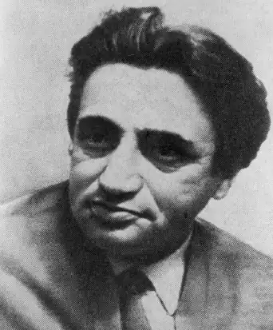

Натан ЗАБАРА
Забара Натан Ілліч народився 27 грудня 1908 року у волинському селі Рогачів у сім'ї гончаря. В 1925 році закінчив трудову школу в Новограді-Волинському і переїхав до Києва, де вступив на курси Центрального інституту праці. Водночас трудився на київських будовах, а в 1931 році був призваний до Червоної Армії. Після демобілізації навчався в аспірантурі Інституту єврейської культури АН УРСР 3 1941 по 1947 рік перебував у діючій армії, а пізніше — у Центральній групі військ. Нагороджений бойовими орденами та медалями.
Як єврейський прозаїк Забара заявив про себе на початку тридцятих років. Його оповідання та новели з'являлися в періодичних виданнях Києва. Москви, Мінська, Біробіджана, в журналах "Советіш літератур", "Штерн" та інших. Окремими книжками вийшли "Радіороман" (1932), "Ніловка" (1934), "З країни в країну" (1938), "Батько" (1940). В перекладі російською мовою побачили світ книга "Сегодня рождается мир" та окремі повісті. Забара був Членом ВУСППу, а потім належав до Спілки письменників України. Учасник Великої Вітчизняної війни. За ратні подвиги нагороджений орденом Червоної Зірки та багатьма медалями. На початку 1951 року письменник був заарештований. Йому, як і багатьом у ті часи українським та єврейським письменникам, інкримінували "націоналістичну пропаганду". А в зв'язку з тим, що Забара деякий чає служив у радянських військах на території Німеччини, слідчий "накинув" йому "підривну діяльність", зв'язок з іноземними розвідками. Абсурдність цих звинувачень була очевидною, і все ж особлива нарада при МДБ УРСР визнала письменника винним і засудила на десять років ув'язнення у магаданських таборах. 6 липня 1956 року комісія по перегляду справ безпідставно репресованих радянських громадян скасувала вирок стосовно письменника. Забару звільнили з-під варти а зв'язку з "відсутністю в його діях складу злочину". Він повернувся в Київ і до самої смерті тяжко хворів. Помер 19 лютого 1975 року. Григорій Полянкер ЛУ 32(4441) 8.08.1991